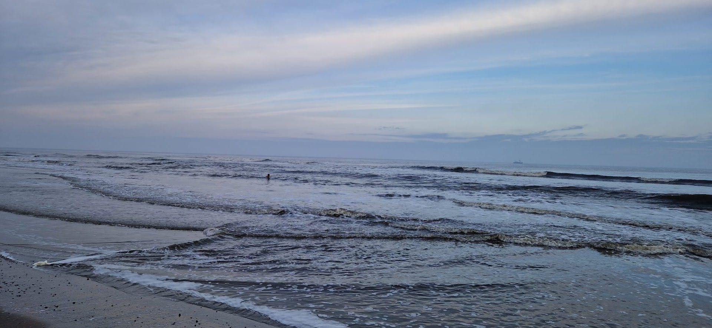
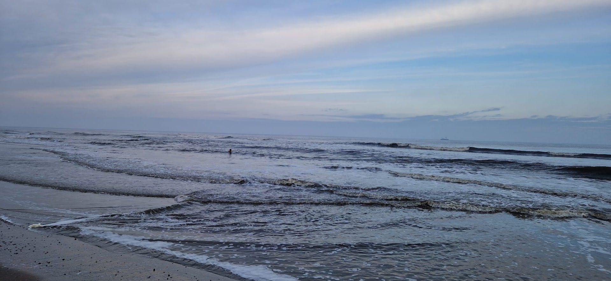
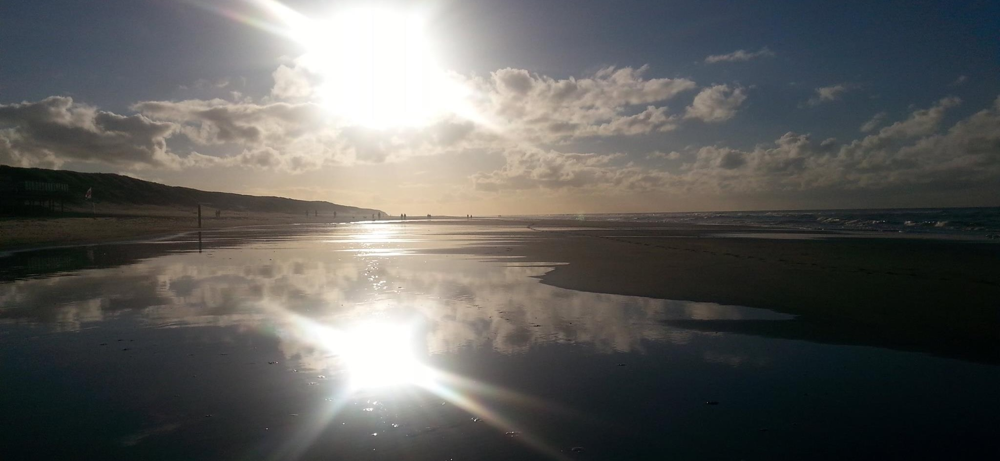
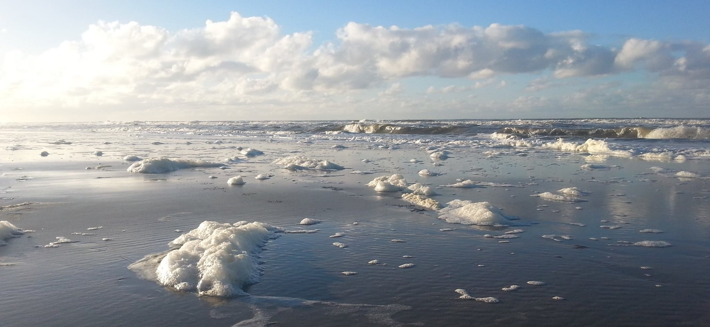
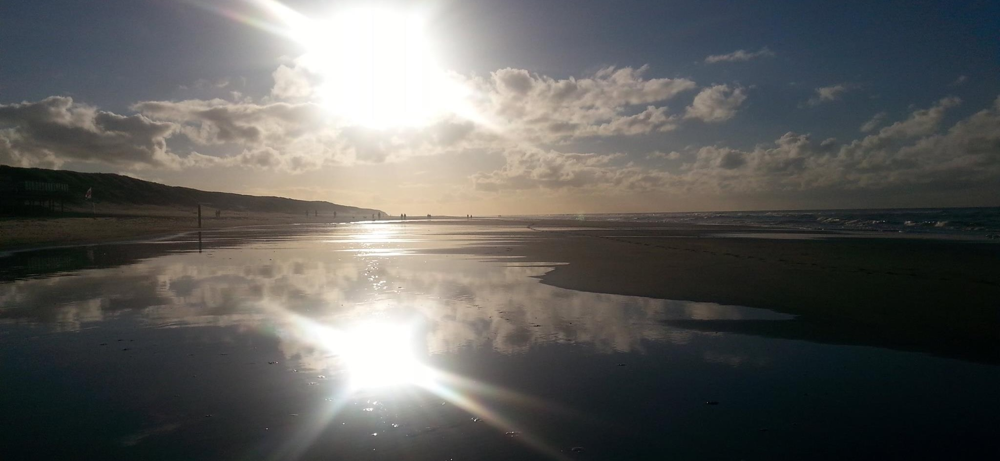
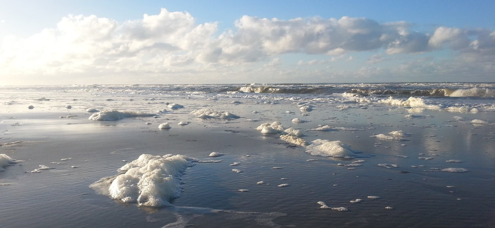

Irisabella Healing Praktijk

Welkom op mijn website. Ik ben Irisabella Bakker en ik ben gepassioneerd om mensen te helpen via healing.
Of je nu op zoek bent naar rust, balans of herstel, ik sta voor je klaar. Samen werken we aan het herstellen van je energie en het vinden van de balans die je nodig hebt om weer helemaal in je kracht te staan.
Hier vind je alles over hoe ik je kan ondersteunen. Voel je vrij om contact met me op te nemen voor meer informatie of om een afspraak te maken.
 

 



Wat is Healing
Healing is een natuurlijke manier om lichaam en geest weer in balans te brengen. Het helpt je energie te herstellen en blokkades op te heffen die je welzijn kunnen belemmeren.
Tijdens een healing sessie werk ik met energie om je zelfhelend vermogen te activeren. Dit kan je helpen om stress te verminderen, je emoties beter te begrijpen zodat je leert er makkelijker en beter mee om te gaan, en een diepere staat van ontspanning te bereiken.
Of je nu te maken hebt met fysieke klachten, emotionele uitdagingen of gewoon behoefte hebt aan meer innerlijke rust, healing kan je ondersteunen op jouw weg naar herstel en balans. Zo kun je met meer vreugde en rust in het leven staan.
Mijn Aanpak
Wanneer je bij mij komt, beginnen we met een gesprek om te begrijpen wat er speelt in je leven. Daarna volgt een healing sessie van ruim een uur.
Tijdens de sessie raak ik je lichaam zachtjes aan om verschillende lagen van stress, zowel fysiek als emotioneel, te voelen en los te maken. Dit helpt om blokkades op te heffen en de energie weer te laten stromen. Soms zitten deze blokkades al langere tijd vast, waardoor meerdere sessies nodig kunnen zijn.
Tijdens de sessie houd je gewoon je kleding aan. Na de sessie bespreken we hoe je het hebt ervaren en of je direct een vervolgafspraak wilt maken. Een healing heeft een doorwerking van enkele weken, dus vaak is pas na een paar weken een tweede, derde of vierde behandeling nodig.
Kosten: De healing zelf duurt een uur en met de voor- en nabespreking zal de hele behandeling ongeveer 1,5 à 2 uur duren; kosten: € 80,00.
Wie ben ik
Mijn naam is Irisabella Bakker en ik woon en werk op het prachtige Texel. Ik ben een gepassioneerd en empathisch persoon met een sterke connectie met de natuur en de mensen om mij heen.
Ik run mijn eigen bedrijf en ondersteun ondernemers met hun bedrijfsvoering. Hoewel mijn focus voornamelijk ligt op financiële ondersteuning, reikt mijn inzet vaak verder. Veel ondernemers kunnen, al dan niet tijdelijk, ook op andere gebieden wel wat hulp gebruiken. Wat ik vooral breng is rust; niet zozeer als ik bij je op bezoek ben misschien, maar zeker in je werkwijze. Ik houd van duidelijkheid en strakke lijnen, en zorg ervoor dat alles goed is geregeld, zodat jij overzicht hebt en kunt doen waar je goed in bent: ondernemen. Maar vergeet niet, we doen het samen.
Ik geniet ervan om buiten te zijn, wandel graag langs de kust en ga het hele jaar door drie keer per week de zee in voor mijn fysieke en mentale gezondheid. Daarnaast zing ik al ruim 25 jaar in een a cappella groep van drie vrouwen. Muziek is voor mij een krachtige manier om energie door te geven en te ontvangen. Het brengt veel vreugde en vrolijkheid in mijn leven.
Ik hecht veel waarde aan oprechte verbindingen en geloof in de kracht van positieve energie en intentie. Het is mijn doel om anderen te helpen hun innerlijke kracht te ontdekken en te gebruiken om een evenwichtiger en vervullender leven te leiden.

Reviews
Contact
Heb je vragen of wil je een afspraak maken? Neem dan gerust contact met me op. Ik sta klaar om je te helpen en je vragen te beantwoorden. Je kunt me bereiken via de onderstaande contactgegevens.
Telefoon: 06 53 24 52 53
E-mail: Irisabella@xs4all.nl